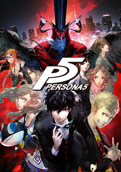
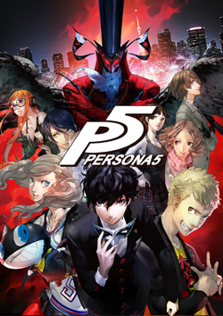

Persona 3 Persona 4 Persona 5
Persona, sometimes known as Shin Megami Tensei: Persona outside of Japan, is a video game franchise developed and primarily published by Atlus. Focusing around a series of role-playing video games, Persona is a spin-off from Atlus' Megami Tensei franchise. The first entry in the series, Revelations: Persona, was released in 1996 for the PlayStation. The series has seen several more games since, with the most recent main entry being 2016's Persona 5.